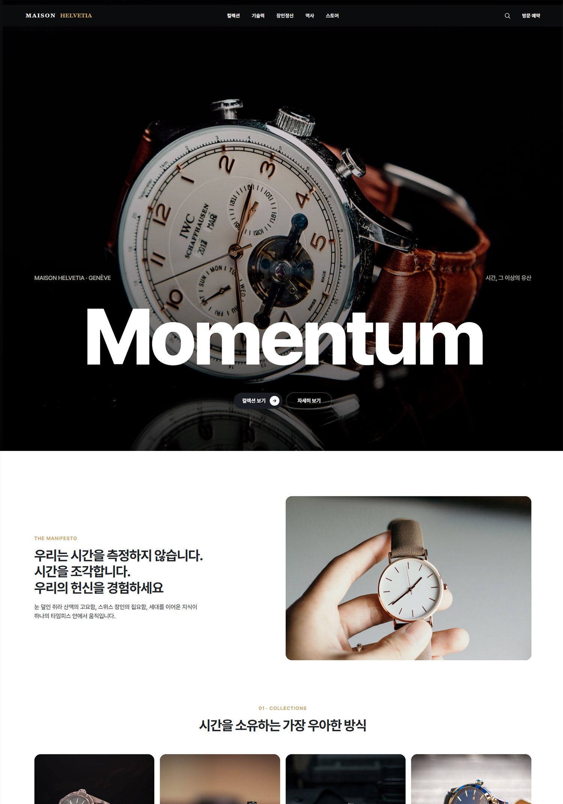

에필로그 - 01
그 공부로 만든, 전문가급 웹사이트
AI가 단시간 만에 만들었습니다 — 'AI 슬롭'이 느껴지지 않는 완성도가 기준입니다

스포츠·러닝 커뮤니티
스포츠/산업
MCP - Claude 웹

럭셔리 시계 브랜드
브랜드/명품
MCP - ChatGPT 웹

현대미술 축제
축제/행사
MCP - Claude 웹

티·말차 브랜드
카페/상점
MCP - Claude 웹